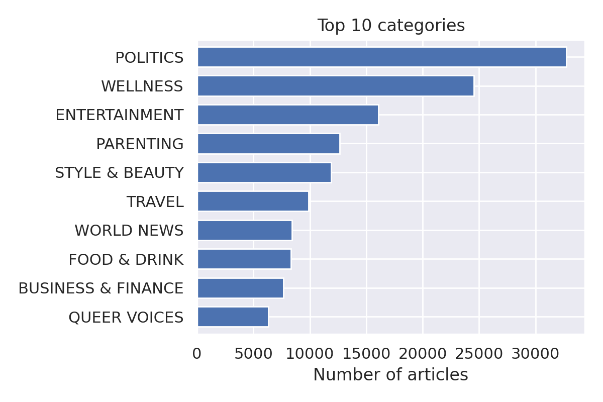

The problem we considered is to classify news articles based on their headlines and short descriptions. Furthermore, since we have a big corpus of articles, we would like to find discussion topics in the corpus, show how they relate to the categories of the dataset and their evolution over time.
The dataset is composed of around 200k news headlines and summaries from year 2012 to 2018 obtained from HuffPost, the dataset is available at https://www.kaggle.com/datasets/rmisra/news-category-dataset.
The dataset contains, among others, the following columns:
Below we show the first 5 rows of the dataset.
Huffpost is an american news aggregator and blog and covers a vast variety of topics including, politics, business, entertainment, tech, lifestyle and others [4].
Rather than using data from a single outlet ex. CNN, MSNBC, Fox, and so on, using articles from a news aggregator should help to have a more balanced view of the discussion topics. However, it must be said that the site "was created to provide a liberal alternative to the conservative news websites such as the Drudge Report" [4]. So it can't be considered to have an unbiased view of the world.
To clean the article text, which is represented by the "full_text" column, we performed the following preprocessing steps in the following order:
#[a-z0-9_]+)!"#&\'()*+,-./:;<=>?@[\\]^_`{|}~nltk.stopwordsFor the punctuation notice that we didn't remove the symbols % and $, that's because we think those symbols would give insight on the category since the articles also talk about business and finance.
As for the bigram collocations, joining the first 1000 was chosen manually by inspecting the collocations.
Finally, notice that we din't perform lemmatisation that's because spacy preprocessing pipeline, even by disabling everyting apart from the lemmatizer, took about 30ms per document, considering that we have 200k documents this step alone would have taken us 2 hours.
The articles, as we said, are classified in 41 categories, however a lot of these categories are duplicates or very similar, for example:
This has happened, among other reasong, because the huffpost has renamed some of the categories during the data collection process.
To solve this problem we decided to merge the following groups of categories into one:
After the merging process we were left with 29 categories. The class imbalance is still very high though, with politics having 32739 articles while latino voices only has 1129. Below we show a barplot of the 10 most common categories.
We decided to project the data in a 2D space using T-SNE to see how the high-dimensional data distirbution looks like. Prior to using T-SNE we also applied SVD or NMF, however those methods didn't manage to find as much structure in the data as T-SNE did.
The T-SNE was performed on a random subset of 10000 documents belonging in the 10 most common categories, since running it on the whole dataset would have taken too long, and plotting all the categories would have made the plot too cluttered.
From the projection we can see that the data is distributed uniformly in a single circular cluster, with a lot of mixing between the classes, this could be caused by the projection of data in a 2D space, or that the headline and the summary of the articles don't provide enough information to determine its category.
To show the most commonly used terms in the articles and also to summarize the overall topic of discussion we decided to create a WordCloud with the wordcloud python library [5].

We see that politics dominates the debate with words like trump or donald_trump occuring a lot, other relevant words are women, america, travel, family. Finally, we have a lot of generic words that can be found basically everywhere on the internet: good, photo, one, make, show, go, new and so on.
The wordcloud also gives us an insight as to what words to remove next or add to the list of stopwords, furthermore we can spot nasty bugs (i.e. stopwords are removed but the dataframe not updated) in our preprocessing pipeline.
To perform topic modelling we used gensim LDA, we also tried to use sklearn LDA, SVD and NMF but their results were subpar with respect to gensim LDA.
To find the best number of topics we ran gensim LDA on a random subset of 25000 articles, with 20000 used for training and 5000 for evaluation. The evaluation metrics used were u_mass and CV score.
As for the huperparameters we set alpha=eta=1/n_topics which are the default values.

We see a spike in both the CV and u_mass scores at 5 topics, so we decided to train an LDA model on the whole corpus using num_topics=5.
The topics of discussion that the model managed to extract from the data are the following:

Topic 1 seems to talk about weddings, topic 2 about trump and us presidents, topic 3 talks about research and health, but also about women, topic 4 talks about hotels and travels, finally topic 5 is very broad, maybe we can associate it to lifestyle or family subjects.
To see how the topics relate to the categories of the dataset, we used the learned topic model to assign a topic distribution to each article, then we grouped the articles by category. For presentation purposes we only show the top 5 categories.

As we thought topic 5 (make, life) is mostly related to the wellness and parent category, apart from that, the other topics are related to what we expect, for example topic 2 mostly relates to politics and topic 1 to style & beauty.
To see the evolution of these topics over time we grouped them by year.
We can see that after 2013 the news became more and more politicized with the topic (trump, presid) gaining more and more traction year by year. This obviously is due to the 2016 presedential elections that took place in the US. An interesting fact, however, is that the topic did not peak in 2016, rather it continued to gain attention till 2018, until the data stops. The other topics of discussion seem to decrease over time, we think this is a consequence of topic (trump, presid) gaining more and more interest.
Overall we can say that the discussion in the US has become more and more politicized with time.
In the dataset each article is labeled in 40 categories, which are reduced to 29 after the category merging process of the first section. With this information available we decided to classify news articles based on the full_text column, which is the concatenation of the article headline and summary.
First of all we splitted the data into train and test sets as follows:
We think this train-test split is more representative of the use-case of a text classification model, since we want the model to generalize well to articles that will be published in the future.
Whenever we need to set some hyperparameters we use an evaluation set, which we create from a random sample of 20% of the train set.
Finally, to evaluate how a model is performing we will use 4 metrics:
The first two metrics tell us the predictive performance of the model, while the second two the amount of compute required in order to get that performance. In particular, the evaluation time is of paramount importance in a production setting, as the computing resources could be very costly to mantain.
The first model that we tried is Multinomial Naive Bayes. The model assumes that all the features are independent from each other, which is a big assumption, however, these models have been used in the past to classify email spam, furthermore they are very fast to train and evaluate [6]. We hope that this simple model will provide a good baseline for further improvement.
Naive bayes requires word counts so we used a bag of words to represent each document. The bag of words was created on the uncleaned text with sklearn CountVectorizer with parameters:
The choice to use the uncleaned text rather than the cleaned text was made by looking at the performance on the validation set: the model trained on the uncleaned text managed to get a slight improvement of 0.01 in the F1 scores. However, it must be noted that the text was not completely uncleaned, we simply cleaned it with sklearn CountVectorizer rather than using our pipeline.
The naive bayes model managed to get.
In this case we used sklearn TfidfVectorizer with the same parameters as CountVectorizer before. However, the logistic regression classifier has one more hyperparameter C which regulates the amount of L2 regularization applied. To set this parameter we minimized the F1 weighted score on the validation set using Optuna, a bayesian optimization library [2], which found the optimal value to be $C \approx 3.5$ .
The logistic regression model managed to get.
Due to the recent success of Deep Learning approaches to the field of NLP we decided to try a CNN and LSTM model to perform text classification.
In these models we used a custom tokenizer on the full_text_cleaned column of the dataset. The tokenizer applies dynamic padding, which means that it pads all documents to the max length of all the documents in the batch, this reduces training times by a lot while also avoiding to truncate sequences.
The CNN model can be seen in the picture below, it has 11M parameters and 256 embedding dimension.

Even though the model is very complex and takes a very long time to train, however it doesn't manage to get the same performance of logistic regression.
The LSTM model, instead, is composed of 5 stacked LSTMs and has 14M parameters with 256 embedding dimension.

As with the CNN model, even though the model is very complex it doesn't manage to surpass logistic regression.
It must be noted that in both the CNN and LSTM models train and evaluation time are computed on a Nvidia T4 GPU, training and evaluating them on CPU would have taken at least 10 times more.
Finally, we tried to use a pretrained transformer to classify the articles, the specific model used is distilbert-base-uncased which is a distillation of bert-base-uncased. The model, with respect to bert-base-uncased is:
The model was trained for one epoch using the huggingface transformer api, following distilbert-base-uncased fine tuning guide. The final performance is a major improvement in the F1 scores on all the previous models, at the cost of way more compute time on GPU.
To summarize all the results of the text classification experiments, we used two bar plots, as we think the reader can appreciate more the difference in performance this way, rather than displaying them in a table.
We can say that Naive bayes is very fast to train, evaluate and provides decent results. Logistic regression is better than naive bayes in any metric apart from the training time, which takes about 3 times more.
As for the neural network models CNN and LSTM are very slow to train and evaluate, on top of that they have worse F1 scores than logistic regression. We can confidently say that in any task and any situation a logistic regression model would be a better choice than any of these models.
Finally, the transformer is the model that performs best in terms of F1 scores, this comes at the cost of huge training and evaluation times with respect to logistic regression or naive bayes. A use case of this model could be when we need accurate predictions or when computing resources are not a problem.
We took a dataset of 200k Huffpost articles and found the topics of discussion using gensim topic model. By analyzing the popularity of the topics over time we demonstrated how the US news have become more and more politicized, with the topic talking about the US president donald trump becoming the main subject of discussion over the years and still growing in 2018, where the data stops.
We also trained text classification models to classify a news article based on its headline and summary, the goodness of a model was measured not only using F1 scores, but also with training and evaluation time, as we think they are of paramount importance in a production scenario. The best model in terms of F1 scores was found by fine-tuning the pretrained distilbert-base-uncased transformer model, this model manages to get a F1_weighted score of 0.68 at the cost of a high evaluation and training time. A simpler and lighter model we considered is logistic regression, which takes less that 1/100 to train and evaluate w.r.t. the transformer model with only a decrease of 3% in F1 score.